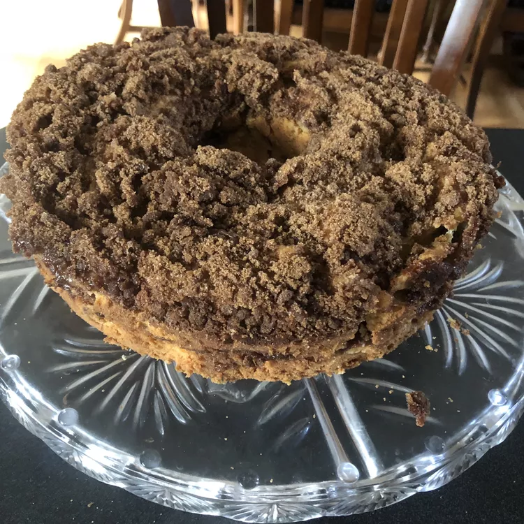

Cinnamon Cake

Ingredients
- 1 (18.25 ounce) package yellow cake mix
- 1 (3.4 ounce) package instant vanilla pudding mix
- 1 (3.4 ounce) package instant butterscotch pudding mix
- 4 eggs
- 1 cup water
- 1 cup vegetable oil
- 1 cup packed brown sugar
- 1 tablespoon ground cinnamon
- 1 cup chopped walnuts
Steps
- Preheat oven to 350 degrees F (175 degrees C). Grease a 9x13 inch baking pan, or a 10 inch Bundt cake pan.
- In a medium bowl, stir together the cake mix, vanilla pudding mix, and butterscotch pudding mix. Add the eggs, oil and water, mix until well blended. In another bowl, stir together the brown sugar, cinnamon and nuts. Pour half of the batter into the pan, spread evenly. Sprinkle with half of the nut mixture. Cover with the rest of the batter, and sprinkle with the rest of the nut mixture.
- Bake for 20 minutes in the preheated oven, then turn the oven down to 325 degrees F (165 degrees C) and bake for an additional 35 to 40 minutes.